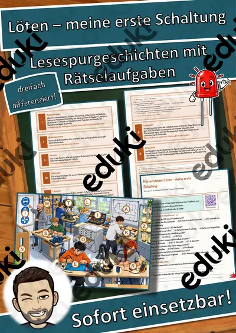
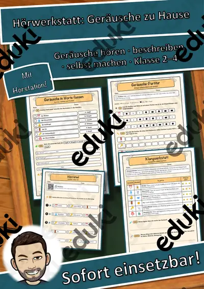

Meine erste eigene Wohnung – Lebenspraxis in einfacher Sprache: 3 Niveaus, Rollenspiele, Test
Meine erste eigene Wohnung – Lebenspraxis in einfacher Sprache: 3 Niveaus, Rollenspiele, Test44 Seiten.
Lebenspraxis-Einheit zum Thema „Meine erste eigene Wohnung“ in einfacher Sprache für den Förderschwerpunkt geistige Entwicklung (Klasse 8–10) und die Berufsvorbereitung.
Acht Bausteine mit je drei Arbeitsblättern in 3 Niveaus: Wünsche und Freiheiten, Wohnungsanzeige lesen, Haushaltsplan, Aufgaben im Haushalt, Sicherheit, Wocheneinkauf mit Budget, Post und Nachbarn, Hilfe holen.
Dazu: Vorlagen (Haushaltsplan, Wochenplan, Wichtige Nummern, Einzug-Checkliste), Erkundungsauftrag für den Einkauf, Selbsteinschätzung, Abschluss-Check, 12 Rollenspielkarten, 8 Gesprächskarten, Urkunde und alle Lösungen.
Geldbeträge in Euro sind gerundete Beispiele, passend für Deutschland.
Ähnliche Materialien

Lesespur: Der Mietvertrag: die erste eigene Wohnung – Lesespurgeschichte mit Rätseln (Klasse 9)

Lesespur: Löten: meine erste Schaltung – Lesespurgeschichte mit Rätseln (Klasse 8)

Lesespur: Programmieren mit Blöcken: meine erste Animation – Lesespurgeschichte mit Rätseln (Klasse 5)

Erste Hilfe – Hörverstehen mit Lückentext (interaktiv)

Erste Hilfe Lückentext mit Wortspeicher Hörverstehen und Suchsel

Bewerbung & Praktikum – Paket Vorstellungsgespräch, Test & Vertrag: 6 Einheiten (Klasse 7–10)

Hörwerkstatt Geräusche: Geräusche zu Hause – Hörstation, 3 Stufen & Test (Klasse 2–4)